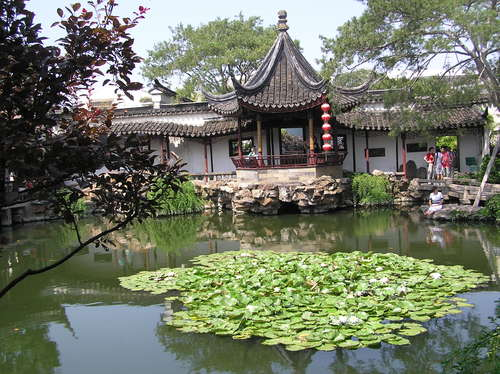

Announcement
Winter 2017 Study Abroad in China
Winter: Jan 3-25, 2017 (tentative dates)
Note: It's possible to extend dates for students who have to meet special requirements (e.g.,scholarships).
Click for Program (Winter 2017) Flyer
Winter 2017 Application Deadline: Oct 24, 2016
E-mail Prof. Lu if you have questions.
(Summer 2017 Program Dates: Click This)
An inexpensive way to Live, Study & Travel to Five Famous Chinese Cities:
Beijing
Xi’an
Nanjing
Suzhou
Shanghai
With side trips to: Hong Kong, Sanya (Oriental Hawaii), Yellow Mountain (i.e., Huangshan) & Tibet
The program is designed in such a way that all travel is education-related, with an academic focus on the courses we teach at real sites in China. The cities we have chosen to visit are all sites of historic and cultural importance.
Students may choose 1-2 courses from the following:
-
ARTD 3108: Art of Ancient China
-
BUSN 3175: Asian Business
- CORC 3202 (Core Curriculum): Classical Philosophies of India and China --satisfies Pathways College Option Requirement
CORC 3206 (Core Curriculum): Development of the Silk Road
--satisfies Pathways College Option Requirement-
CLAS 1110 (i.e., CORC 1110) : Classical Cultures (China)
--satisfies Pathways Flexible Core Requirement. -
CHIN 1010: Beginners Chinese-Level I
-
CHIN 1020: Intensive Elementary Chinese-Level II
-
CHIN 1030: Intensive Intermediate Chinese-Level III
- CHIN 2024: Advanced (Chinese) Language Skills
- HIST 3005: The Shaping of the Modern World --satisfies Pathways Flexible Core World Cultures and Global Issues Requirement
HIST 3534: Revolutionary China
SPEC 1619: Intercultural Communication
-
SPEC 2623: Business & Professional Communication (Cross-Cultural Perspectives
-
TVRA 3871: Elements of TV Field Production
- --
TVRA 4849: International Documentary Production
-
-- TVRA 5010: Independent Projects
- --
- SPEC 7296X: Special Topic Course for Graduate Students
(For more information on the courses, visit Coursework page of this website.)
Program Features:
All courses are taught by Brooklyn College faculty, for CUNY-BC credit
Group travel to 5 famous Chinese cities: Beijing, Xi’an, Nanjing, Suzhou/Hangzhou & Shanghai
-
Field trips, with lectures and academic discussions, to sites of historical and cultural importance (e.g., Great Wall, Tiananmen Square, Forbidden City, Summer Palace, Terra Cotta Warriors, Suzhou Gardens/Picturesque Hangzhou West Lake, Tea Plantation, Silk Factory, Cloisonné Factory, Shanghai Bund, etc)
Experience Chinese culture, interact with local people, have a real feel of Chinese life
See the new Beijing and new China after the Olympics
Enjoy a new Beijing after the Olympics and a fascinating Shanghai as host of World Expo
Travel and sightseeing are all arranged by professional travel agencies
-
Help arrange side trips to Hong Kong, Sanya (Oriental Hawaii),Yangzhou, Yellow Mountain & Tibet（info on Side Trips)
Total Estimated Program Cost (for Winter 2017): only $3,350, which includes:
Round-trip international tickets (NYC to Beijing; Shanghai to NYC)
Transportation within the 5 cities and between cities in China
Hotels in all the cities in China
Admission tickets to the scenic spots for the field trips
International travel insurance
Meals
Open to all CUNY campuses & any other US campuses. Both qualified CUNY and non-CUNY undergraduate and graduate students can enroll. Some scholarships & Financial Aid may be available, depending on student's eligibility.
For more information about our China program:
-
Contact Ms. Garrick, Tel: 718-951-5225.
-
Or, send e-mail to Prof. Lu
at cunyinchina@brooklyn.cuny.edu Dept. of Speech Communication Arts & Sciences
3439 Boylan Hall
Brooklyn College-CUNY
2900 Bedford Avenue
Brooklyn, NY 11210